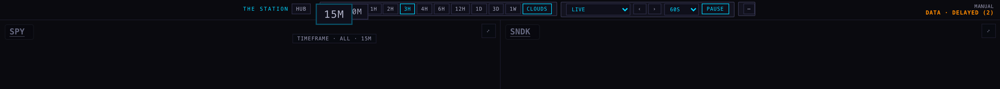
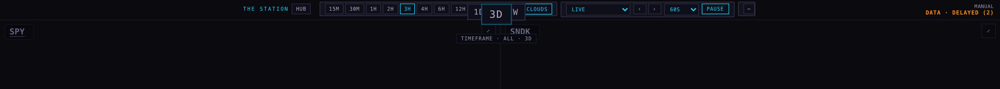
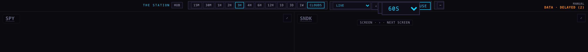

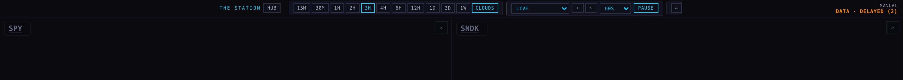
Station · 23 September · candidate branch station/dock-m2-20260923, built on production ea239c8. Nothing deployed.
Every picture below is a real browser shot of the page — production on the left of each pair, this candidate on the right — taken at the four widths you asked for, plus a slow pointer pass across the whole strip.
| Your words | What changed |
|---|---|
There's a black space to the left of Station, which causes some cramping. |
The strip used to be centred, and it also had to leave room on the left to balance the readout pinned on the right. At 1680 that was 408 px of black before the first control. The strip now starts at the left edge and reserves that room once, on the right, where the readout actually is. First control now sits 8 px in. |
The drop down where I switch between the pages by name… fixed all the way at the left… does not need to say the full word. |
It is the first thing on the strip and it is a two-letter code — LIVE is LV, macro cross-asset is MX. The list you open still says every name in full, and the chip's tooltip says the full name too. It went from 108 px wide to 46 px. |
Sectioned, a little bit of a separation between types of buttons. |
Six groups, each in its own faint box with a hairline edge and a gap to the next: the page switcher, the Station and its hub link, the timeframes, the screen controls, the ⋯ drawer, and the readout. |
This two charts, six chart, eight charts, I'm not going to be using that. |
Gone from the dock — the section, the chips and the code that drew them. It was only hidden by CSS before. Scenes still choose their own chart count; that value now lives outside the strip as plain state. |
You're not extending it downwards… things jump on top of each other… the rules of the zooming are inconsistent. |
One rule for every item: each grows downward from one fixed top edge, and each owns the room it grows into, so it can never reach its neighbour. The strip holds that room, so its own height never changes and nothing below it moves. |
Balance those shapes. |
One height, one 2 px corner and one padding rhythm for every chip on the strip. At rest the boxes hug their chips; the box under your pointer is the only one that grows. |
Everything should consider phone behavior. |
390 px and both iPad orientations below. On a phone the strip scrolls sideways, a finger never magnifies anything, and the one word that cost a swipe before the first control is gone. |
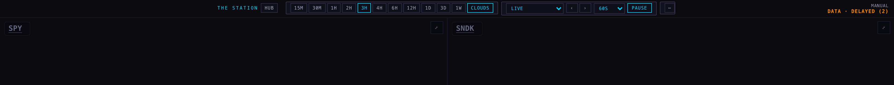
After · candidate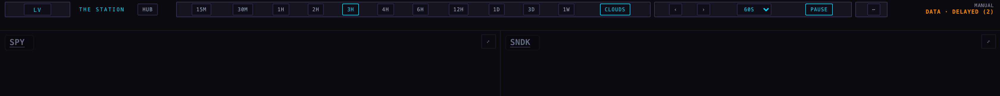
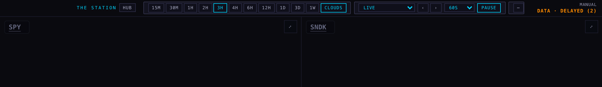
After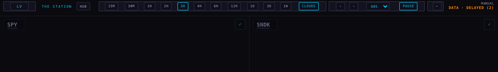
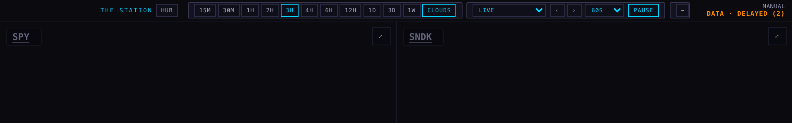
After · portrait 1024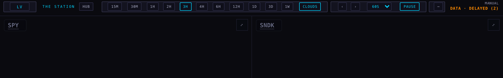
Before · landscape 1366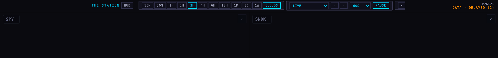
After · landscape 1366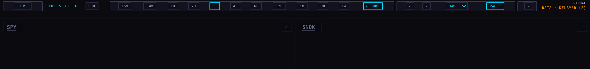
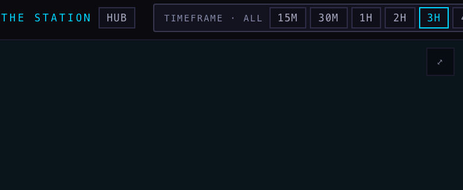
After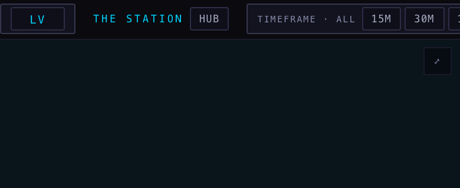
A slow pass of the pointer from the left edge of the strip to the right, thirteen frames, same pass on both builds.
Before




After


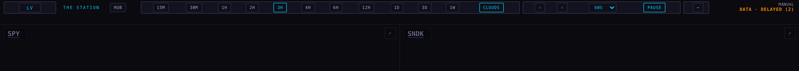
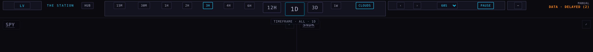

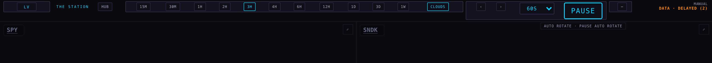

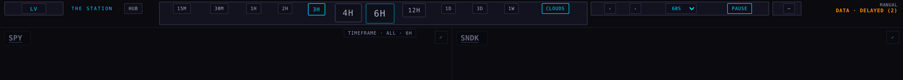
| What | Before | After | Why it matters |
|---|---|---|---|
| Black space before the first control (1680) | 408 px | 8 px | the cramping |
| Page switcher, closed | 108 px, full word | 46 px, two letters | your ask |
| Different top edges during the pass | one — every chip starts at 6 px | they grow down, never up | |
| Sideways movement of a chip's centre | 0.05 px | nothing drifts | |
| Smallest gap between two chips | +6.7 px | they never touch, so nothing lands on top of anything | |
| Strip height through the whole pass | 52 px, unchanged | the wall below never jumps | |
| Corner radius / chip height | 0 px, three heights | 2 px, one height | balanced shapes |
| Sideways page overflow at 390 / iPad | none | phone and tablet behave | |
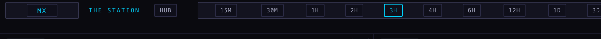
These shots were taken against a local copy, and the chart API refuses a localhost origin, so the panes show DATA · DELAYED instead of live prices. That affects the pictures, not the strip: the dock's layout does not depend on quotes. The open page list is a native dropdown, so it cannot be photographed in a headless browser — I checked its contents and its behaviour in the page instead, which is the frame above.
The test suite runs 403 tests with 18 failures — the same 18 that fail on production, none added. Four dock tests were rewritten to say the new rule instead of the old one: the strip starts at the left, the page switcher sits first, and the chart-count selector is gone rather than hidden.